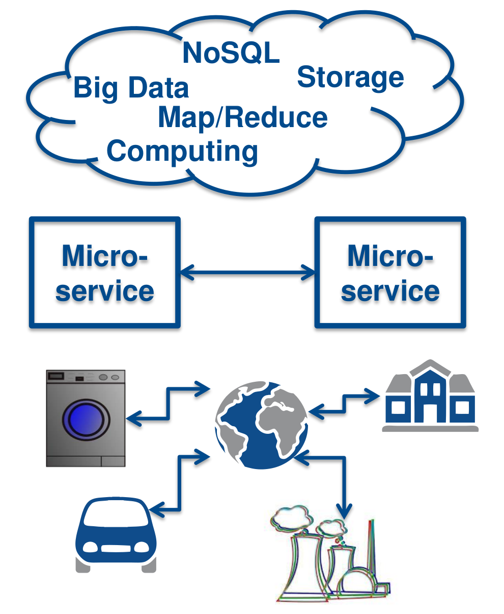
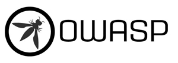
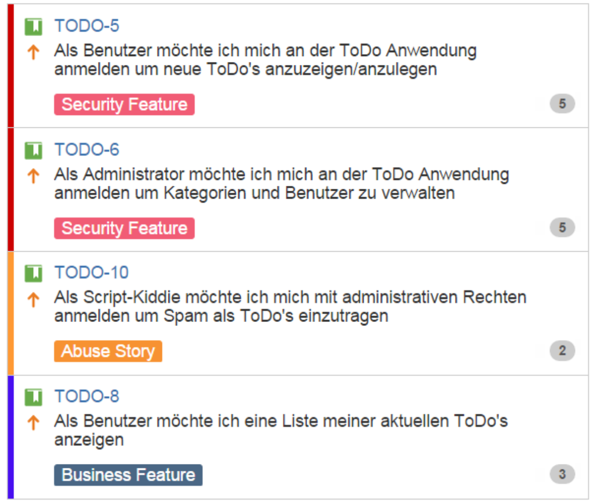

Agil aber sicher!
https://andifalk.github.io/
agil-aber-sicher/ presentation/index.html

Andreas Falk
NovaTec Consulting GmbH
andreas.falk@novatec-gmbh.de@NT_AQE, @andifalk
Unsere Software ist doch sicher!?

Quelle: troyhunt.com
Quelle: heise.de
Quelle: heise.de
Quelle: heise.de

Quelle: heise.de
State of Software Security Report 2017 (Veracode)

Quelle: veracode.com

Quelle: haveibeenpwned.com
Security ist nicht mein Job!?
EU Datenschutz Grundverordnung
(EU-DSGVO)
Ab Mai 2018 geltendes Recht!
Quelle: GDPR’s Missing Link Report (senzing.com/gdpr)
Artikel 32
(Sicherheit der Verarbeitung)
“ Unter Berücksichtigung des Stands der Technik, ... treffen der Verantwortliche ...geeignete technische und organisatorische Maßnahmen, um ein dem Risiko angemessenes Schutzniveau zu gewährleisten; diese Maßnahmen schließen unter anderem Folgendes ein: a) die Pseudonymisierung und Verschlüsselung personenbezogener Daten... ”
Quelle: eur-lex.europa.euNutzerverhalten

Quelle: Deutschland sicher im Netz (DsiN): Sicherheitsindex 2017
Neue Herausforderungen
1 Security-Professional für 100 Entwickler

Quelle: sonatype.com/devops-survey-report
Sicherheit
Im Projektalltag
Wir haben doch keine Zeit
Hacker finden uns nicht? (interessant)
Quelle: shodan.io
Wir haben doch eine Firewall

Ausbildung der Entwickler?
Entwicklung (Kopieren) aus stackoverflow.com

Quelle: stackoverflow.com
Weiter so?

sichere Entwicklungs-prozesse ?
Microsoft Security Development Lifecycle

Quelle: microsoft.com/en-us/sdl
Adobe Secure Product Lifecycle

Quelle: adobe.com/security/engineering.html

Scrum Guide
“Das Entwicklungsteam besteht aus Profis, die am Ende eines jeden Sprints ein fertiges (Done) Inkrement übergeben, welchespotenziell auslieferbar ist. ”
Quelle: www.scrumguides.org

Potentiell unsicher ausliefern ?
Ausgangslage: Security != Agil!

| Agile Entwicklung | Penetration-Testing |
|---|---|
| Inkrementell mit schnellem Feedback | Punktuell und Aufwendig |
| Innerhalb von Sprints | Abseits von Sprints |
| “Working software over comprehensive documentation” | Umfassende Reports |
| Business Value | Nicht-Funktional |
Unverständliche Pen-Test Reports
Security in Scrum

Security Officer/Champion
Security Trainings

Security Trainings
- Sicherheits-Risiken
- Datenschutz-Risiken
- Threat Modeling
- AbUser Stories (Evil Stories)
Security Trainings
- Threat Modeling
- Secure Design Patterns
- Security Code Reviews
- Security Testing
- Security Dojos
Open Web Application Security Project


Application Security Verification Standard
Anforderungen und Tests

https://github.com/OWASP/ASVS
Pro Active Controls
Patterns für sichere Entwicklung

https://www.owasp.org/index.php/ OWASP_Proactive_Controls
Juice Shop


- Threat Model Refinement
- AbUser Stories erstellen
- Security Features mit hoher Prio
- Akzeptanzkriterien für Sicherheit
Threat Modeling ist auch Agil
AbUser Stories

AbUser und Security Stories
- Detaillierung Threat Model
- Akzeptanzkriterien für Sicherheit
- Security Patterns diskutieren
- Security Testfälle
AbUser Story Tasks
- Neue Security-Risiken diskutieren
- Security Tasks ggf. neu planen
- Secure Design / Coding
- Pairing mit Security-Officer/Champion
- Security-Aware DoD
- Security Code Reviews
- CI Pipeline mit Security
Agiles Security Testing
Quelle: www.owasp.org/index.php/OWASP_Testing_ProjectEntwickler Security Tests
Bevor ein Angreifer “testet”
CI Commit-Stage mit statischer Analyse (SAST)

OWASP Dependency Check
- Prüft Projektabhängigkeiten auf Sicherheitsprobleme
- Unterstützt Java und .NET Anwendungen
- Command line, Ant, Maven, Gradle, Jenkins, SBT
OWASP Dependency Check Report
CI Security-Stage mit dynamischer Analyse (DAST)

- Transparenz der Security gegenüber Stakeholdern
- Inspect & Adapt aller Security-Aktivitäten
Idealzustand: Security == Agil!

SecDevOps
Security Officer/Champion in SecDevOps

HTTPS ist Pflicht !!
HTTPS-Konfiguration überprüfen
Security header überprüfen
Und in der Cloud?
Alte Bekannte und mehr...
Alle OWASP Top 10 Web Probleme...
Distributed DoS
Economic DoS
Und was ändert sich dann
in der Cloud?
Rotate, Repair, Repave
“What if every server inside my data center had a maximum lifetime of two hours? This approach would frustrate malware writers...”Justin Smith (Chief Security Officer at Pivotal)
https://thenewstack.io/cloud-foundrys-approach-security-rotate-repair-repave
Damit das nicht passiert !!
Quelle: youtube.comReferences
- Have I been pwned?
- Shodan.io
- Deutschland sicher im Netz (DsiN): Sicherheitsindex 2017
- OWASP Top 10 2017 (https://github.com/OWASP/Top10)
- Application Security Verification Standard (https://github.com/OWASP/ASVS)
- Pro Active Controls (https://www.owasp.org/index.php/OWASP_Proactive_Controls)
- https://docs.microsoft.com/de-de/azure/security/azure-security-threat-modeling-tool
- https://github.com/mike-goodwin/owasp-threat-dragon
- https://github.com/bkimminich/juice-shop
- Rotate, Repair, Repave (https://thenewstack.io/cloud-foundrys-approach-security-rotate-repair-repave)
All images used are from Pixabay and are published under Creative Commons CC0 license.
All used logos are trademarks of respective companiesQ&A
https://www.novatec-gmbh.de https://blog.novatec-gmbh.de
andreas.falk@novatec-gmbh.de
@NT_AQE, @andifalk